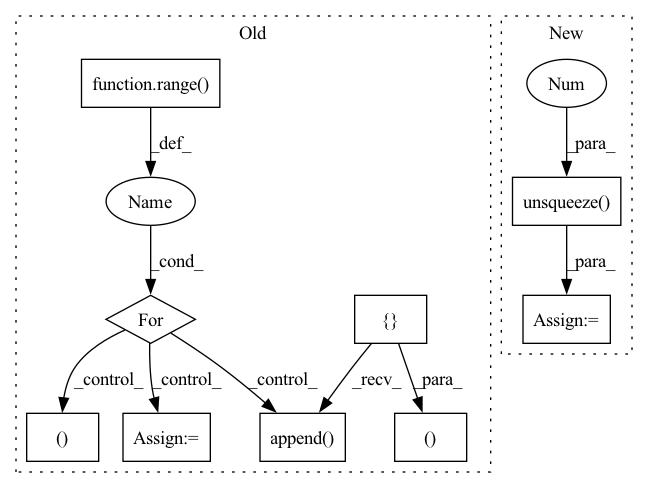

Pattern ID :29559

Before Change
reservoir.forward = self.eprop._decorate_hidden_forward(reservoir.forward, reservoir.name)
output_layer.forward = self.eprop._decorate_forward(output_layer.forward, output_layer.name)
for _ in progress_bar:
x_pred = []
x_pred.append(self.true_time_series[:, 0, :].clone())
forward_tensor = self.true_time_series[:, 0, :].clone().to(reservoir.device)
hh = None
for t in range(1, self.true_time_series.shape[-2]):
forward_tensor, hh = unpack_out_hh(reservoir(forward_tensor, hh, t=t-1))
forward_tensor, _ = unpack_out_hh(output_layer(forward_tensor, None, t=t-1))
x_pred.append(forward_tensor)
// eligibility_traces = dy_dw_local(y=forward_tensor, params=self.params)
// self.eprop.eligibility_traces = eligibility_traces
// batch_loss = self.eprop.apply_criterion(forward_tensor, self.true_time_series[:, t].to(forward_tensor.device))
// learning_signals = self.compute_learning_signals(loss_at_t)
// errors = self.eprop.compute_errors(forward_tensor, self.true_time_series[:, t])
// learning_signals = self.eprop.compute_learning_signals(errors)
// self.eprop.update_grads(errors, batch_loss)
forward_tensor.detach_()
hh = recursive_detach(hh)
// if t % self.update_each == 0:
// self.eprop._make_optim_step()
self.eprop._make_optim_step()
x_pred = torch.stack([t.cpu() for t in x_pred], dim=1)
pvar = PVarianceLoss()(x_pred, self.true_time_series.to(x_pred.device))
mse = torch.nn.MSELoss()(x_pred, self.true_time_series.to(x_pred.device))
progress_bar.set_postfix({"pvar": to_numpy(pvar).item(), "MSE": to_numpy(mse).item()})
pvars.append(to_numpy(pvar).item())
mses.append(to_numpy(mse).item())
return x_pred, self.true_time_series
def compute_learning_signals(self, error: torch.Tensor):
learning_signals = []
error_mean = torch.mean(error.view(-1, error.shape[-1]), dim=0)
After Change
mses.append(to_numpy(mse).item())
val_pvars = []
inputs = self.raw_time_series[:, 0, :].clone().unsqueeze(1).to(self.model.device)
for _ in range(100):
val_x_pred = self.model.get_prediction_trace(inputs)
pvar = PVarianceLoss()(val_x_pred, self.raw_time_series.to(val_x_pred.device))
val_pvars.append(to_numpy(pvar).item())
print(f"Validation PVariance: {np.mean(val_pvars):.3f}")
In pattern: SUPERPATTERN
Frequency: 3
Non-data size: 9
Instances
Fragment ID: 87696954
Project Name: neurotorch/neurotorch
Commit Name: da8d4065502c761ccf6e28e47dd189e3b5488140
Time: 2023-01-31
Author: 50332514+JeremieGince@users.noreply.github.com
File Name: src/neurotorch/learning_algorithms/debug_e_prop_v5.py
M Class Name: SimplifiedEpropFinal
N Class Name: SimplifiedEpropFinal
M Method Name: train(4)
N Method Name: train(4)
M Parent Class:
N Parent Class:
M File Name: src/neurotorch/learning_algorithms/debug_e_prop_v5.py
N File Name: src/neurotorch/learning_algorithms/debug_e_prop_v5.py
M Start Line: 120
M End Line: 153
N Start Line: 115
N End Line: 144
'>
Before Change
key_padding_mask = self.get_attn_pad_mask(interaction[self.ITEM_ID_LIST], interaction[self.ITEM_ID_LIST])
look_ahead_mask = self.get_attn_subsequence_mask(interaction[self.ITEM_ID_LIST])
mask = torch.gt((key_padding_mask + look_ahead_mask), 0)
attn_weights = []
attn_outputs = behavior_list_emb_drop
for i in range(self.num_blocks):
attn_outputs, attn = self.multi_head_attention(attn_outputs, attn_outputs, attn_outputs, mask)
attn_weights.append(attn)
attn_outputs = self.feedforward(attn_outputs)
long_term_prefernce = self.gather_indexes(attn_outputs, interaction[self.ITEM_LIST_LEN] - 1)
predict_behavior_emb = self.layer_norm(long_term_prefernce)
return predict_behavior_emb, attn_weights
def get_attn_pad_mask(self, seq_q, seq_k):
"""
seq_q: [batch_size, seq_len]
After Change
def forward(self, interaction):
item_list = interaction[self.ITEM_ID_LIST]
position_ids = torch.arange(item_list.size(1), dtype=torch.long, device=item_list.device)
position_ids = position_ids.unsqueeze(0).expand_as(item_list)
position_embedding = self.position_embedding(position_ids)
item_emb = self.item_embedding(item_list)
input_emb = item_emb + position_embedding
input_emb = self.LayerNorm(input_emb)
input_emb = self.dropout(input_emb)
extended_attention_mask = self.get_attention_mask(item_list)
trm_output = self.trm_encoder(input_emb,
extended_attention_mask,
output_all_encoded_layers=True)
output = trm_output[-1]
output = self.gather_indexes(output, interaction[self.ITEM_LIST_LEN] - 1)
return output // [B H]
'>
Fragment ID: 87696942
Project Name: rucaibox/recbole
Commit Name: bcb4d69235f1460db426402cc76af1ec1db8e898
Time: 2020-10-07
Author: 838803621@qq.com
File Name: recbox/model/sequential_recommender/sasrec.py
M Class Name: SASRec
N Class Name: SASRec
M Method Name: forward(2)
N Method Name: forward(2)
M Parent Class: SequentialRecommender
N Parent Class: SequentialRecommender
M File Name: recbox/model/sequential_recommender/sasrec.py
N File Name: recbox/model/sequential_recommender/sasrec.py
M Start Line: 63
M End Line: 78
N Start Line: 98
N End Line: 115
'>
Before Change
key_padding_mask = self.get_attn_pad_mask(interaction[self.ITEM_ID_LIST], interaction[self.ITEM_ID_LIST])
look_ahead_mask = self.get_attn_subsequence_mask(interaction[self.ITEM_ID_LIST])
mask = torch.gt((key_padding_mask + look_ahead_mask), 0)
attn_weights = []
attn_outputs = behavior_list_emb_drop
for i in range(self.num_blocks):
attn_outputs, attn = self.multi_head_attention(attn_outputs, attn_outputs, attn_outputs, mask)
attn_weights.append(attn)
attn_outputs = self.feedforward(attn_outputs)
long_term_prefernce = self.gather_indexes(attn_outputs, interaction[self.ITEM_LIST_LEN] - 1)
predict_behavior_emb = self.layer_norm(long_term_prefernce)
return predict_behavior_emb, attn_weights
def get_attn_pad_mask(self, seq_q, seq_k):
"""
seq_q: [batch_size, seq_len]
After Change
def forward(self, interaction):
item_list = interaction[self.ITEM_ID_LIST]
position_ids = torch.arange(item_list.size(1), dtype=torch.long, device=item_list.device)
position_ids = position_ids.unsqueeze(0).expand_as(item_list)
position_embedding = self.position_embedding(position_ids)
item_emb = self.item_embedding(item_list)
input_emb = item_emb + position_embedding
input_emb = self.LayerNorm(input_emb)
input_emb = self.dropout(input_emb)
extended_attention_mask = self.get_attention_mask(item_list)
trm_output = self.trm_encoder(input_emb,
extended_attention_mask,
output_all_encoded_layers=True)
output = trm_output[-1]
output = self.gather_indexes(output, interaction[self.ITEM_LIST_LEN] - 1)
return output // [B H]
'>
Fragment ID: 87696951
Project Name: rucaibox/recbole
Commit Name: ffcc134b950b0452fc3002c303ddab36e6f9738c
Time: 2020-10-08
Author: 838803621@qq.com
File Name: recbox/model/sequential_recommender/sasrec.py
M Class Name: SASRec
N Class Name: SASRec
M Method Name: forward(2)
N Method Name: forward(2)
M Parent Class: SequentialRecommender
N Parent Class: SequentialRecommender
M File Name: recbox/model/sequential_recommender/sasrec.py
N File Name: recbox/model/sequential_recommender/sasrec.py
M Start Line: 63
M End Line: 78
N Start Line: 98
N End Line: 115